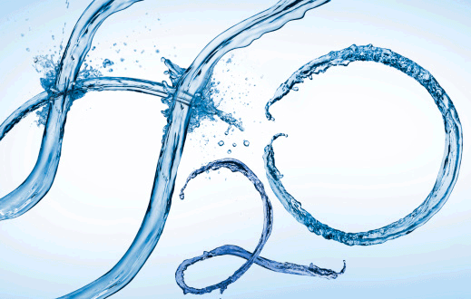

Якщо питна вода містить хімічні добавки: ризики та рішення
Ми звикли довіряти водопровідній воді, вважаючи її безпечною, адже вона проходить муніципальне очищення. Проте мало хто замислюється про те, що для знезараження у воду додають реагенти, які в довгостроковій перспективі можуть негативно впливати на наш організм.
Найпоширеніші «добавки» у водопровідній воді
Більшість міських систем водопостачання використовують такі хімічні компоненти:
- Хлор. Найдешевший спосіб убити бактерії. Але хлор змінює смак води і під час взаємодії з органікою утворює небезпечні хлорорганічні сполуки.
- Фтор. У деяких системах фторування використовується для профілактики карієсу, але надлишок фтору може призвести до флюорозу зубів і проблем із кістковою тканиною.
- Коагулянти та флокулянти. Речовини, які допомагають «зібрати» бруд у великі пластівці для фільтрації. Якщо система очищення працює нестабільно, залишки цих речовин можуть потрапити в кран.
Як хімічні добавки впливають на здоров'я?
Постійне вживання води з хімічними реагентами може призвести до таких наслідків:
- Подразнення слизових. Хлор агресивно діє на слизову оболонку шлунка та кишківника.
- Навантаження на печінку. Організму доводиться витрачати ресурси на нейтралізацію та виведення хімічних сполук.
- Зниження імунітету. Надлишок антисептиків у воді може пригнічувати корисну мікрофлору кишківника.
Як отримати воду без хімії?
Простий фільтр-глечик може прибрати запах хлору, але він безсилий проти багатьох інших хімічних сполук. Єдиний надійний спосіб — професійне багатоступеневе очищення.
У Crystal Water ми використовуємо систему, яка повністю видаляє хімічні добавки:
- Активоване вугілля зв'язує та видаляє хлор і органіку.
- Мембрана оберненого осмосу відсікає будь-які хімічні сполуки на молекулярному рівні.
- Озонування забезпечує стерильність без використання хлору.
Переходьте на природну чистоту без хімії
Ваше тіло заслуговує на воду, яка не містить нічого зайвого. Лише чиста H2O та корисні мінерали.
Замовити воду без хімії